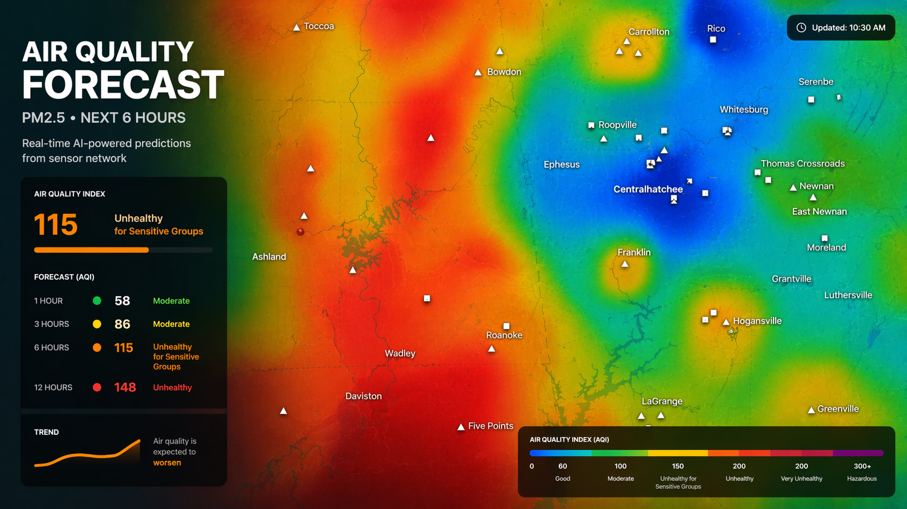
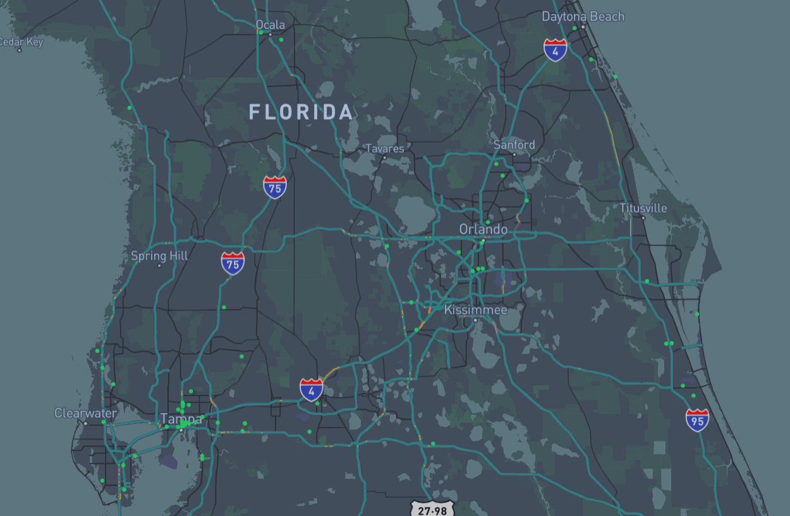
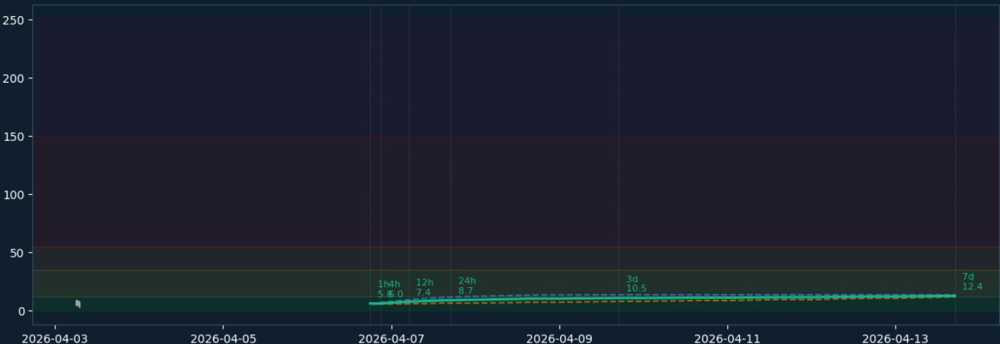
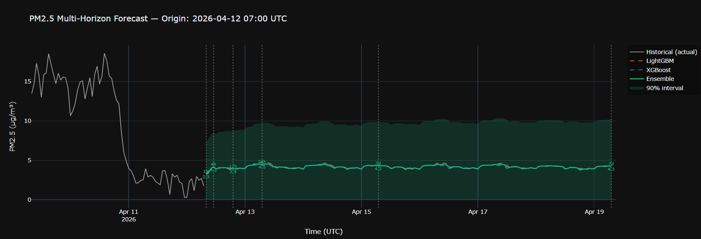

AI-powered system that predicts air pollution using real-time and historical sensor data.

This system provides real-time and predictive air quality insights by forecasting pollution levels across different regions. It allows users to anticipate and visualize changes in air quality using an interactive heatmap.
The platform generates predictions up to 7 days ahead to analyze both short-term fluctuations and long-term trends in PM2.5 and PM10 levels.
Predictions are visualized through an interactive map interface, where users can explore air quality conditions across multiple time horizons (1h, 6h, 12h, 24h, and 7 days).
The system is currently deployed as a platform that shows real-time sensor data alongside model-generated predictions. The green markers represent air quality sensor locations distributed across different regions.
As the model has shown strong performance in forecasting PM2.5 and PM10 levels across multiple regions, the current phase focuses on improving data pipeline flow and API integration for a more efficient real-time system. At the same time, the user interface is being enhanced by transitioning from a basic map with numeric outputs to a heatmap visualization of air quality

The system is built as an end-to-end machine learning pipeline that integrates real-time data ingestion, feature engineering, and predictive modeling.


The model was trained on over 65,000+ cleaned PM2.5 observations collected from multiple sensors in the selected region and covering a time range between April 2023 and April 2026.
The data was split into 20,236 training samples and 5,230 test samples.
Both models explain approximately 88% of the variance in PM2.5 levels (R² = 0.884 for XGBoost and 0.888 for LightGBM).
Additionally, the model achieved a 90% residual interval of [-3.95, 3.63].
← Back to Portfolio